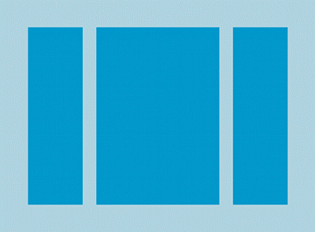
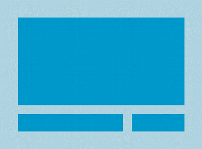
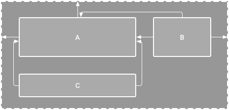
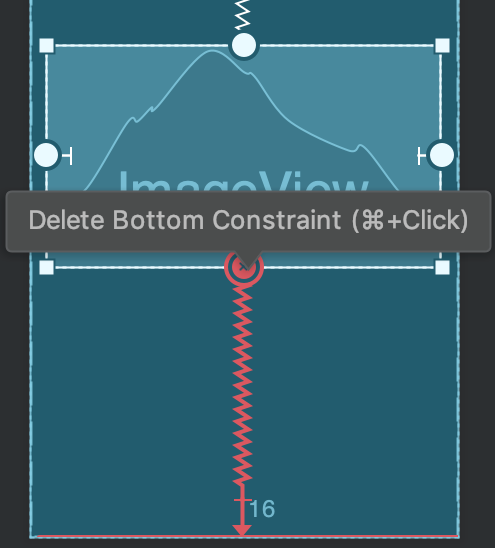
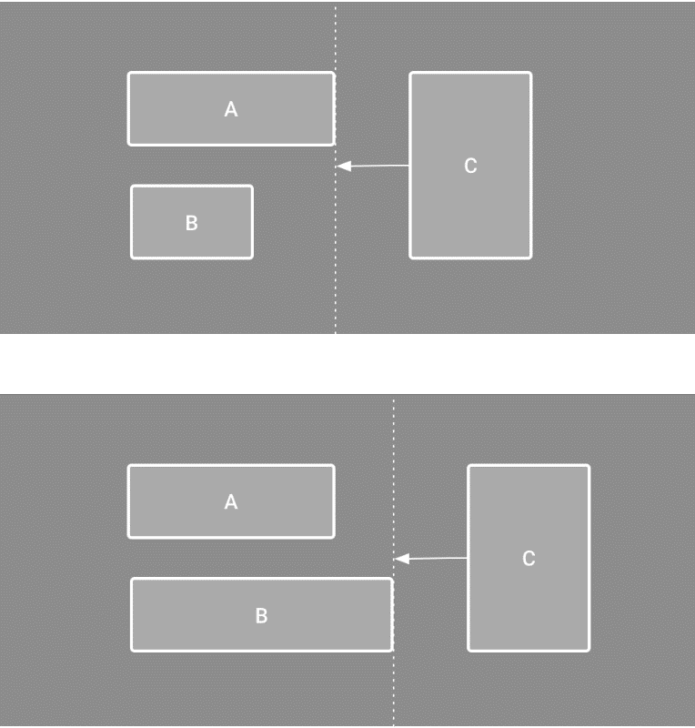
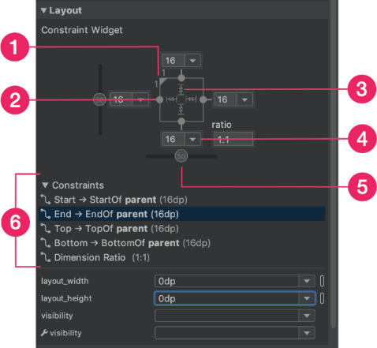
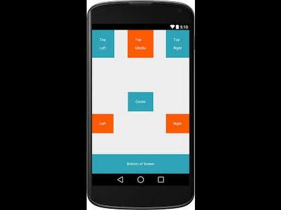
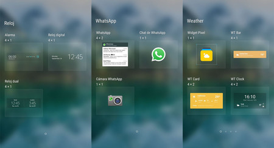

Un diseño define la estructura visual para una interfaz de usuario, como la IU para una actividad o widget de una app. Se puede declarar un diseño de dos maneras::
1. • Declarar elementos de la IU en XML: Android proporciona un vocabulario XML simple que coincide con las clases y subclases de vistas, como las que se usan para widgets y diseños. También puedes utilizar la función Layout Editor de Android Studio para crear tu diseño XML mediante una interfaz de arrastrar y soltar.
2. • Crear una instancia de elementos de diseño durante el tiempo de ejecución: Tu aplicación puede crear objetos View y ViewGroup (y manipular sus propiedades) de forma programática.
Declarar tu IU en XML te permite separar la presentación de tu aplicación del código que controla su comportamiento. El uso de archivos XML también facilita la creación de diferentes diseños para diferentes tamaños de pantalla y orientaciones.
El marco de trabajo de Android te ofrece la flexibilidad de usar uno de estos métodos o ambos para crear la IU de tu aplicación. Por ejemplo, puedes declarar los diseños predeterminados de tu aplicación en XML y, luego, modificar el diseño durante el tiempo de ejecución.
Al usar vocabulario XML de Android, puedes crear rápidamente diseños de IU y de los elementos de pantalla que contienen, de la misma manera que creas páginas web en HTML, con una serie de elementos anidados.
Cada archivo de diseño debe contener exactamente un elemento raíz, que debe ser un objeto View o ViewGroup. Una vez que hayas definido el elemento raíz, puedes agregar widgets u objetos de diseño adicionales como elementos secundarios para crear gradualmente una jerarquía de vistas que defina tu diseño. Después de declarar tu diseño en XML, guarda el archivo con la extensión .xml en el directorio res/layout/ de tu proyecto de Android para que pueda compilarse correctamente.
Cuando compilas tu aplicación, cada archivo de diseño XML se compila en un recurso View. Debes cargar el recurso de diseño desde el código de tu aplicación, en la implementación de devolución de llamada Activity.onCreate(). Para eso, llama a setContentView() pasando la referencia a tu recurso de diseño en forma de R.layout.layout_file_name.
Cada objeto View y ViewGroup admite su propia variedad de atributos XML. Algunos atributos son específicos de un objeto View (por ejemplo, TextView admite el atributo textSize), aunque estos atributos también son heredados por cualquier objeto View que pueda extender esta clase. Algunos son comunes para todos los objetos View, porque se heredan de la clase raíz View (como el atributo id). Otros atributos se consideran "parámetros de diseño" y son atributos que describen ciertas orientaciones de diseño del objeto View, tal como lo define el objeto principal ViewGroup de ese objeto.
Cualquier objeto View puede tener un ID entero asociado para identificarse de forma única dentro del árbol. Cuando se compila la aplicación, se hace referencia a este ID como un número entero, pero el ID se asigna normalmente en el archivo XML de diseño como un string del atributo id. Este es un atributo XML común para todos los objetos View (definido por la clase View) y lo utilizarás muy a menudo La sintaxis de un ID dentro de una etiqueta XML es la siguiente: android:id="@+id/my_button".
Los atributos de diseño XML denominados layout_something definen parámetros de diseño para el objeto View que son adecuados para el objeto ViewGroup en el que reside. Cada clase ViewGroup implementa una clase anidada que extiende ViewGroup.LayoutParams. Esta subclase contiene tipos de propiedad que definen el tamaño y la posición de cada vista secundaria, según resulte apropiado para el grupo de vistas..
Ten en cuenta que cada subclase LayoutParams tiene su propia sintaxis para configurar valores. Cada elemento secundario debe definir LayoutParams adecuados para su elemento primario, aunque también puede definir diferentes LayoutParams para sus propios elementos secundarios. Todos los grupos de vistas incluyen un ancho y una altura (layout_width y layout_height), y cada vista debe definirlos. Muchos LayoutParams también incluyen márgenes y bordes opcionales.
La geometría de una vista es la de un rectángulo. Una vista tiene una ubicación, expresada como un par de coordenadas izquierda y superior, y dos dimensiones, expresadas como un ancho y una altura. La unidad para la ubicación y las dimensiones es el píxel. Es posible recuperar la ubicación de una vista al invocar los métodos getLeft() y getTop(). El primero muestra la coordenada izquierda, o X, del rectángulo que representa la vista. La segunda muestra la coordenada superior, o Y, del rectángulo que representa la vista. Ambos métodos devuelven la ubicación de la vista respecto de su elemento primario.
El tamaño de una vista se expresa con un ancho y una altura. En realidad, una vista tiene dos pares de valores de ancho y altura. El primer par se conoce como ancho medido y altura medida. Estas dimensiones definen cuán grande quiere ser una vista dentro de su elemento primario. Las dimensiones medidas se pueden obtener llamando a getMeasuredWidth() y a getMeasuredHeight(). El segundo par se conoce simplemente como ancho y altura, o, algunas veces, ancho de dibujo y altura de dibujo. Estas dimensiones definen el tamaño real de la vista en la pantalla en el momento de dibujarlas y después del diseño. Estos valores pueden ser diferentes del ancho y la altura medidos, pero no necesariamente. El ancho y la altura se pueden obtener llamando a getWidth() y getHeight().
Cada subclase de la clase ViewGroup proporciona una manera única de mostrar las vistas que anidas en ella. Aquí te mostramos algunos de los tipos de diseño más comunes integrados en la plataforma Android.
1. Diseño Lineal: Un diseño que organiza sus elementos secundarios en una sola fila horizontal o vertical. Si la longitud de la ventana super a la de la pantalla, crea una barra de desplazamiento.

2. Diseño Relativo: Te permite especificar la ubicación de los objetos secundarios en función de ellos mismos (el objeto secundario “A” a la izquierda del objeto secundario “B”) o en función del elemento primario (alineado con la parte superior del elemento primario).

ConstraintLayout te permite crear diseños grandes y complejos con una jerarquía de vistas plana (sin grupos de vistas anidadas). Es similar a RelativeLayout en cuanto a que se presentan todas las vistas de acuerdo con las relaciones entre las vistas del mismo nivel y el diseño de nivel superior, pero es más flexible que RelativeLayout y más fácil de usar con el editor de diseño de Android Studio.
Para definir la posición de una vista en ConstraintLayout, debes agregar al menos una restricción horizontal y una vertical. Cada restricción representa una conexión o alineación con otra vista, el diseño de nivel superior o una guía invisible. Cada restricción define la posición de la vista a lo largo del eje vertical u horizontal, por lo que cada vista debe tener un mínimo de una restricción para cada eje, aunque a menudo se necesitan más.

Para convertir un diseño existente en uno de ConstraintLayout, sigue estos pasos:
1. Abre el diseño existente en Android Studio y haz clic en la pestaña Design, en la parte inferior de la ventana del editor.
2. En la ventana Component Tree, haz clic con el botón derecho en el diseño y, luego, en Convert layout to ConstraintLayout.
Para iniciar un archivo de diseño con restricciones nuevo, sigue estos pasos:
1. En la ventana Project, haz clic en la carpeta del módulo y, luego, selecciona File > New > XML > Layout XML.
2. Ingresa un nombre para el archivo de diseño y "androidx.constraintlayout.widget.ConstraintLayout" en Root Tag.
3. Haz clic en Finish.
1. Haz clic en una restricción para seleccionarla y, luego, presiona Delete.
2. Mantén presionado Control y luego, haz clic en un anclaje de restricción. Cuando la restricción se muestra de color rojo, puedes hacer clic para borrarla.

Como sucede con las guías, una barrera es una línea invisible respecto de la cual puedes restringir vistas. Sin embargo, la barrera no define su propia posición, sino que se desplaza en función de la posición de las vistas que contiene. Esto es útil si deseas restringir una vista a un conjunto de vistas en lugar de a una vista específica.

1) Haz clic en Guidelines en la barra de herramientas y, luego, en Add Vertical Barrier o Add Horizontal Barrier.
2) En la ventana Component Tree, selecciona las vistas que deseas dentro de la barrera y arrástralas hasta el componente de barrera.
3) Selecciona la barrera en Component Tree, abre la ventana Atributes y, luego, configura la barrierDirection.
Puedes usar los controladores de las esquinas para cambiar el tamaño de una vista, pero esta acción fija el tamaño dentro del código a fin de que la vista no cambie de tamaño para diferentes contenidos o tamaños de pantalla. Si quieres seleccionar un modo de tamaño diferente, haz clic en una vista y abre la ventana Attributes en el lado derecho del editor.
Cerca de la parte superior de la ventana Attributes, se encuentra el inspector de vistas, que incluye controles para varios atributos de diseño, como se muestra en la figura (disponible solo para vistas en un diseño de restricciones).

Puedes establecer el tamaño de la vista en una proporción, como 16:9, si al menos una de las dimensiones de la vista está configurada como "Match Constraints" (0 dp). Para habilitar la proporción, haz clic en Toggle Aspect Ratio Constraint y, luego, ingresa la proporción de ancho:altura en la entrada que se muestra.
Para asegurarte de que todas las vistas estén espaciadas de manera uniforme, haz clic en Margin en la barra de herramientas a fin de seleccionar el margen predeterminado para cada vista que agregues al diseño. Cualquier cambio que realices en el margen predeterminado se aplicará solo a las vistas que agregues a partir de ese momento. Para controlar el margen de cada vista en la ventana Attributes, haz clic en el número de la línea que representa cada restricción.
Una cadena es un grupo de vistas que están vinculadas entre sí con restricciones de posición bidireccionales. Dentro de una cadena, se pueden distribuir las vistas de manera horizontal o vertical.
Spread: Las vistas se distribuyen uniformemente (tras restar los márgenes). Es el valor predeterminado.
Spread inside: La primera y la última vista se fijan a las restricciones de cada extremo de la cadena y el resto se distribuye de manera uniforme.
Weighted: Cuando se define la cadena como spread o spread inside, puedes configurar una o más vistas como "Match Constraints" (0dp) para llenar el espacio restante. De forma predeterminada, se distribuye el espacio uniformemente entre las vistas configuradas como "Match Constraints", pero puedes asignar una ponderación de importancia a cada vista.
Packed: Se agrupan las vistas (una vez que se restan los márgenes). Luego puedes ajustar el sesgo de toda la cadena (izquierda/derecha o arriba/abajo) cambiando el sesgo de la vista de extremo de la cadena.

Los estilos y temas en Android te permiten separar los detalles de diseño de tu app de la estructura y el comportamiento de la IU, de forma similar a las hojas de estilo en el diseño web. Un estilo es una colección de atributos que especifican la apariencia de un solo View. Un estilo puede especificar atributos como el color y el tamaño de fuente, el color de fondo y mucho más. Un tema es un tipo de estilo que se aplica a toda una app, actividad o jerarquía de vistas, no solo a una vista individual. Cuando aplicas tu estilo como tema, cada vista de la app o actividad aplica cada atributo de estilo que admite. Los temas también pueden aplicar estilos a elementos que no se ven, como la barra de estado y el fondo de la ventana. Los estilos y los temas se declaran en un archivo de recursos de estilo en res/values/, generalmente llamado styles.xml.
Para crear un nuevo estilo o tema, abre el archivo res/values/styles.xml de tu proyecto. Para cada estilo que desees crear, sigue estos pasos:
1) Agrega un elemento "style" con un nombre que identifique el estilo de forma exclusiva.
2) Agrega un elemento "item" para cada atributo de estilo que quieras definir.
3) El name en cada elemento especifica un atributo que de otro modo usarías como un atributo XML en tu diseño. El valor del elemento
Una limitación es que puedes aplicar un solo estilo a un View. Sin embargo, en un TextView también puedes especificar un atributo TextAppearance que funciona de manera similar a un estilo. Permite definir un estilo específico del texto y dejar el estilo de un View disponible para otros usos. Sin embargo, ten en cuenta que, si defines cualquier atributo de texto directamente en View o en un estilo, esos valores anularán los valores de TextAppearance.
Cada widget del marco de trabajo y la biblioteca de compatibilidad tiene un estilo predeterminado. Por ejemplo, cuando diseñas tu app con un tema de la biblioteca de compatibilidad, una instancia de Button se diseña usando el estilo Widget.AppCompat.Button. Si deseas aplicar un estilo de widget diferente a un botón, puedes hacerlo con el atributo style de tu archivo de diseño.

El realizar una investigación sobre los temas que se vinculan con el diseño de interfaz y experiencia de usuario fueron de mucha importancia, ya que sin ella el desarrollo de la aplicación hubiera sido tan superfluo, llegando a ser una molestia para los usuarios. Por otra parte, entender más afondo como se desempeña la información con la interfaz, nos ayudó a llegar a una mejor solución ante las situaciones de uso del usuario y a un mejor manejo de la información dentro de la aplicación.
En el mercado existen tecnologías y herramientas potentes para el desarrollo de aplicaciones móviles, pero ha sido la posibilidad de facilidad en el diseño y además que está respaldado por el fabricante del mismo sistema operativo lo que nos ha parecido muy destacable de crear las aplicaciones en Android Studio.
La influencia del diseño en los productos digitales es de tal importancia que no puede pasar desapercibido en ningún momento, ya que actualmente la competencia digital es tan grande que son los pequeños detalles los que marcan la diferencia entre una aplicación exitosa y una genérica del montón.